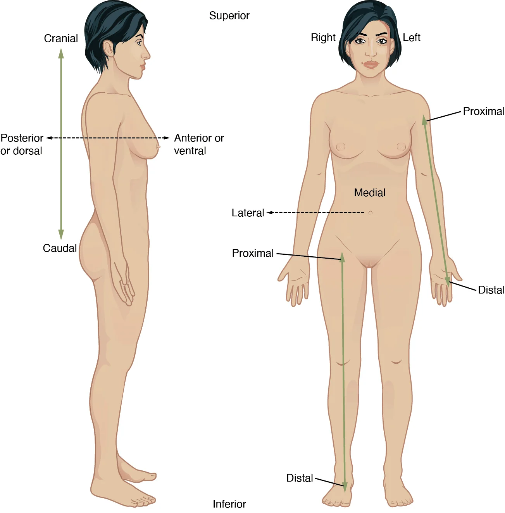
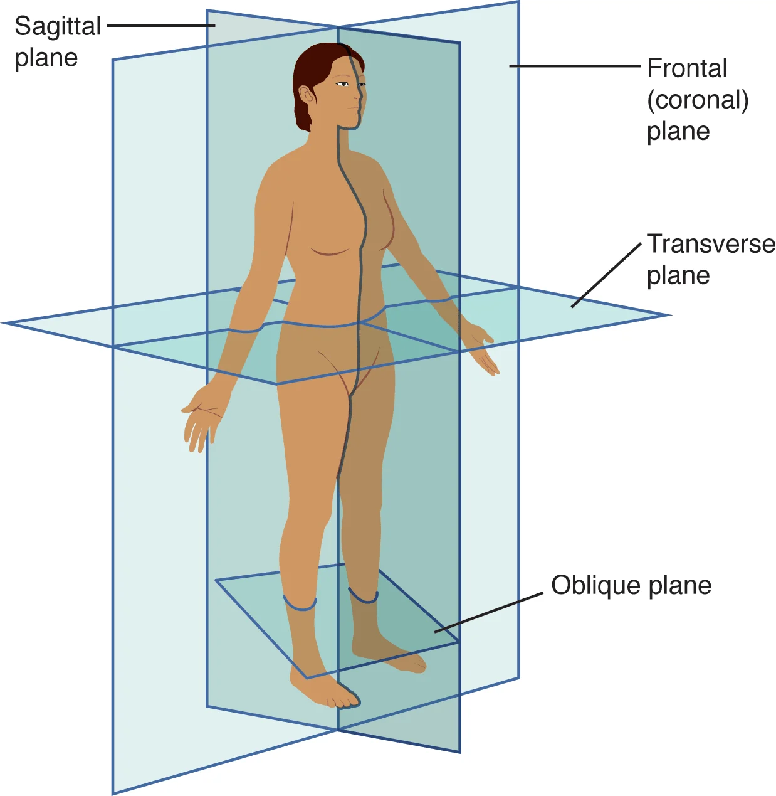
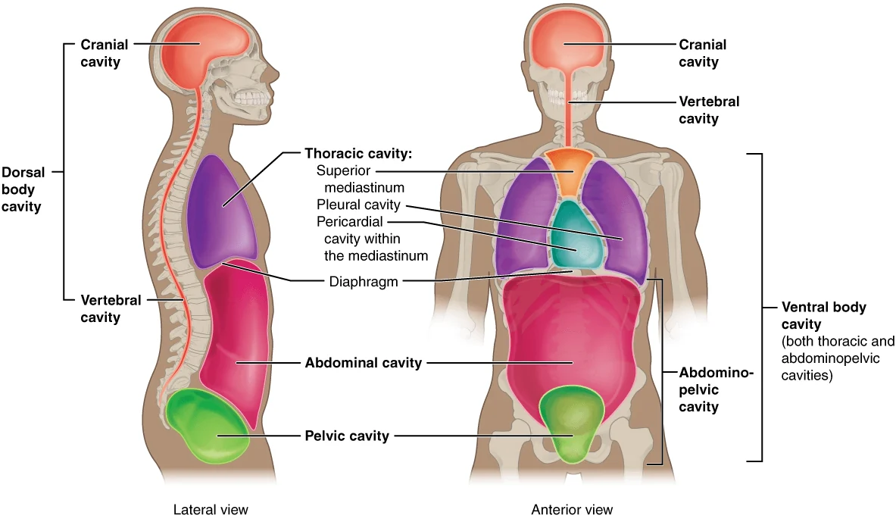
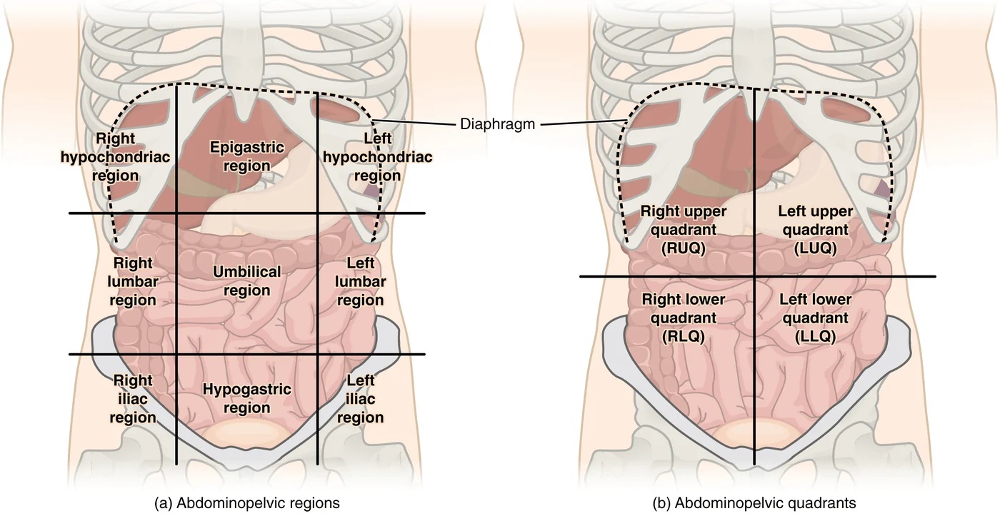

Body Orientation: Directions, Planes and Cavities
TEAS objective S.1.1 · Human Anatomy & Physiology
What the TEAS expects: you can describe where one body part is relative to another, name the plane that produces a given section, and say which cavity holds a given organ.
1. Everything starts from anatomical position
Every direction word in anatomy assumes the body is in anatomical position: standing upright, facing forward, arms at the sides, palms facing forward, feet flat and slightly apart.
Why it matters: "the thumb is lateral to the pinky" is only true with palms forward. If you picture the palms facing your thighs, the answer changes. On the TEAS, always picture anatomical position before you answer, even if the question shows a patient lying down.
Check 1: In anatomical position, is the radius (thumb side of the forearm) medial or lateral to the ulna? Answer at the bottom of the page.
2. Directional terms come in opposite pairs
Learn them as pairs. If you know one, you know its opposite.
Swipe the table sideways to see every column. →
| Pair | Meaning | Example |
|---|---|---|
| Superior / Inferior | Toward the head / toward the feet | The nose is superior to the mouth. |
| Anterior (ventral) / Posterior (dorsal) | Front / back | The sternum is anterior to the heart. |
| Medial / Lateral | Toward the midline / away from the midline | The nose is medial to the eyes. |
| Proximal / Distal | Closer to / farther from where a limb attaches to the trunk | The elbow is proximal to the wrist. |
| Superficial / Deep | Toward the body surface / away from the surface | Skin is superficial to muscle. |

Tap or click the figure to open it full size (in a new tab).
The pair students mix up most: proximal/distal versus superior/inferior. For the limbs, proximal/distal is the precise choice and the one TEAS questions usually expect. (Superior/inferior is still true in anatomical position, since the knee is above the ankle, but it is less specific.) For the trunk and head, use superior/inferior.
Two body positions you may see: supine means lying face up; prone means lying face down. Directional terms still refer to anatomical position, whichever way the patient is lying.
Check 2: Which two words both correctly describe the knee compared with the ankle? Answer at the bottom.
3. Planes are the imaginary cuts
A plane is a flat surface that slices through the body. Imaging scans (CT, MRI) show the body in these planes.
Swipe the table sideways to see every column. →
| Plane | What it separates | Picture it |
|---|---|---|
| Sagittal | Left from right | A cut straight down the body from front to back. |
| Midsagittal (median) | Left and right into equal halves | A sagittal cut exactly through the midline. |
| Frontal (coronal) | Front (anterior) from back (posterior) | A cut from ear to ear, top to bottom. |
| Transverse (horizontal) | Top (superior) from bottom (inferior) | A cut across the waist, like a belt line. |

Tap or click the figure to open it full size (in a new tab).
Memory aid: a coronal plane runs where a headband or a pair of headphones sits, up over the top of the head from ear to ear.
Check 3: A scan slices straight across the abdomen at the level of the navel, separating the upper body from the lower body. Which plane is it? Answer at the bottom.
4. Body cavities hold the organs
There are two main cavities.
Dorsal (posterior) cavity
- Cranial cavity: brain
- Vertebral (spinal) cavity: spinal cord
Ventral (anterior) cavity, divided by the diaphragm:
- Thoracic cavity (above the diaphragm): the lungs, each in its own pleural cavity, and the mediastinum, the central region between the lungs. The mediastinum holds the heart (inside its pericardial cavity), the trachea, the esophagus and the great vessels.
- Abdominopelvic cavity (below the diaphragm):
- Abdominal portion: stomach, liver, gallbladder, spleen, pancreas, most of the intestines
- Pelvic portion: urinary bladder, internal reproductive organs, end of the large intestine (rectum)

Tap or click the figure to open it full size (in a new tab).
Why the diaphragm matters for questions: it is the dividing line. If an organ is above it, the answer is thoracic; below it, abdominopelvic.
Watch the ribs: the liver, stomach and spleen sit tucked up under the lower ribs, but they are below the diaphragm, so they are abdominal, not thoracic.
Kidneys: they sit against the posterior abdominal wall, behind the lining of the abdominal cavity (retroperitoneal). If a TEAS question asks which major cavity, the answer is the abdominopelvic cavity.
Serous membranes line the ventral cavities with two layers: the parietal layer lines the cavity wall, and the visceral layer covers the organ. A thin film of fluid between them lets organs move without friction. Their names follow the cavity: pleura (lungs), pericardium (heart), peritoneum (abdomen). The heart's serous pericardium also sits inside a tough fibrous outer sac, and its visceral layer is the epicardium, the outer layer of the heart wall.
Check 4: Name the cavity that holds the urinary bladder. Answer at the bottom.
5. Quadrants and regions of the abdomen
Clinicians divide the abdomen to describe where pain or a finding is.
Four quadrants (two lines crossing at the navel). "Right" and "left" are the patient's right and left.
| Quadrant | Main organs |
|---|---|
| Right upper (RUQ) | Most of the liver, gallbladder |
| Left upper (LUQ) | Stomach, spleen |
| Right lower (RLQ) | Appendix, beginning of the large intestine (cecum) |
| Left lower (LLQ) | End of the large intestine (sigmoid colon) |
Nine regions (a finer grid): the middle column from top to bottom is epigastric, umbilical, hypogastric (pubic). The sides are hypochondriac (upper), lumbar (middle) and iliac or inguinal (lower), on the right and left.

Tap or click the figure to open it full size (in a new tab).
Why it matters: classic appendicitis pain settles in the right lower quadrant, and gallbladder pain in the right upper quadrant.
Check 5: A patient points to pain in the lower right abdomen. Which quadrant, and which small organ is the usual suspect? Answer at the bottom.
Common traps
- Answering from the patient's position instead of anatomical position. Lying down does not change "superior."
- Missing the more precise term: for limbs, the expected answer is usually proximal/distal.
- Reading right and left from your own side. Right and left always mean the patient's right and left.
- Putting the liver or stomach in the thoracic cavity because they sit under the ribs.
- Confusing sagittal with frontal. Sagittal separates left/right; frontal separates front/back.
- Putting the heart in the abdominal cavity. The heart is thoracic.
Learn it properly
If anything here didn't make sense, read the full explanation with diagrams: OpenStax Anatomy and Physiology 2e, Section 1.6 Anatomical Terminology: OpenStax (opens in a new tab)
Check answers
- Lateral. In anatomical position the thumb points away from the body, so the radius is lateral to the ulna.
- Proximal and superior. The knee is closer to the hip (proximal) and higher than the ankle (superior). Proximal is the more precise term for limbs and the one TEAS questions usually want.
- Transverse. A horizontal slice separates superior from inferior.
- Pelvic cavity, the lower part of the abdominopelvic cavity.
- Right lower quadrant (RLQ); the appendix.
ESCC TEAS Prep · Original study material written for Eastern Shore Community College. Figures and linked textbook: OpenStax, Anatomy and Physiology 2e, licensed CC BY 4.0.